This article is written in Chinese.
2022.06.23 · 科技應用
速成 LINE 聊天機器人：優化使用者體驗 讓冷冰冰的系統扮演防疫重責大任
本篇適合：對於使用者體驗、防疫與公共衛生與媒體的運用有興趣的朋友
歡迎先來玩玩防疫資訊聊天機器人，加入我們的 LINE 官方帳號：https://lin.ee/C3lEb3d
2022 年 5 月，陽明交大防疫志工團使用 LINE 官方帳號製作出防疫資訊聊天機器人，希望透過本篇文章帶大家一步一步理解整個系統的建置與思考模式，也歡迎提供多元的想法！
先加入我們官方帳號玩玩吧：https://lin.ee/C3lEb3d
前情提要
三月底起，疫情開始竄升，台灣晚了世界好幾年，也終將面臨一場無法逃避的大考。各個大專校院也無法逃過這次的疫情，大學生們紛紛確診。
然而困難的是，大部分大專校院無法持續仰賴既有的衛政單位的疫調與相關協助，而需更扛起自我應變、自主疫調與處理的能力。數個月前，認識的陽明校區一位學生會夥伴（aka 明明自己也是一個比我更加忙碌的碩士班學生）跟學校衛保組提議了是否能讓幾個學生自發性投入學校的疫調、或關懷人力，就這樣，約兩週的籌備期間，少少的組成了五人小組，希望能以「個人」名義，投入這場戰疫之中。
詳細文章記錄在此。
組成了防疫志工群，除了傳統公衛思維、投入電話疫調關懷人力外，自己與學務長討論，因為我們皆有一些新聞傳播與媒體相關背景，因此學務長提議是不是來做一個 LINE 官方帳號，可以提供同學們在上班、非上班時間皆可有除了電話之外，找尋得到可能的協助，並希望防疫志工也能協助這塊的業務。
當時我想，或許除了單純的 LINE 一對一問候，或許可以製作「聊天機器人」，將一些常見問題 FAQ 製作好，或定期更新，讓同學們有任何問題可以先到聊天機器人上尋求解答，若真的無法找到答案，再致電給校方尋求協助，或使用 LINE 一對一關懷的管道由防疫志工解答。
因為自己曾經接觸過 LINE 官方帳號的後台，理解 LINE 官方帳號其實設計彈性相當大，除了既有的基礎功能外，也可以透過 Messaging API 等技術可以有更大的效用與彈性。
然而自己尚未接觸過這方面技術（雖然如果實作上似乎邊做邊學或許也並非超級困難），但礙於時間關係，希望能在一兩天內建置好整個系統雛型，因此經過初步確認 LINE 官方帳號後台既有的功能後，決定透過這些既有功能，發揮到最大效用。
因此，我開始著手了系統架構規劃。
基礎原理：將「自動回應訊息」發揮到極致
一般來說，LINE 官方帳號的使用情境通常都是店家使用，透過官方帳號建立忠誠顧客，定期推播資訊、協助客服與強化顧客的一對一溝通。
原先認為類似的邏輯，可以將「聊天機器人」與「一對一問答」都建立在同個官方帳號底下，然而馬上發現問題。
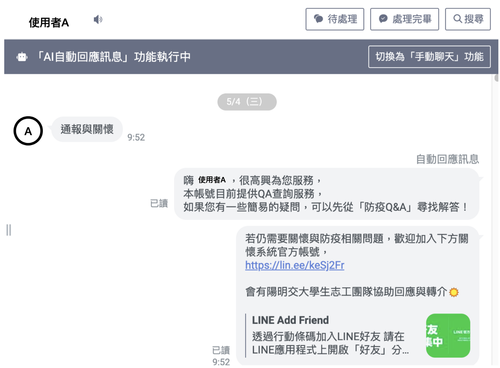
試著操作過程時發現，LINE 有三種「回應模式」：
- 手動回應：當使用者傳送訊息給官方帳號，官方帳號收到訊息手動回覆。
- 自動回應訊息：當使用者傳送訊息給官方帳號，當「符合」剛開始管理端預設的文字內容，即自動回應對應訊息給使用者。 3.AI 自動回應訊息：當使用者傳送訊息給官方帳號，LINE 系統「自動判定」該回應之內容，自動回覆對應訊息給使用者。AI 自動回應訊息分為一般問題（歡迎、感謝、客訴、諮詢內容過多等）、基本訊息（營業時間、付款等）、預約資訊等。
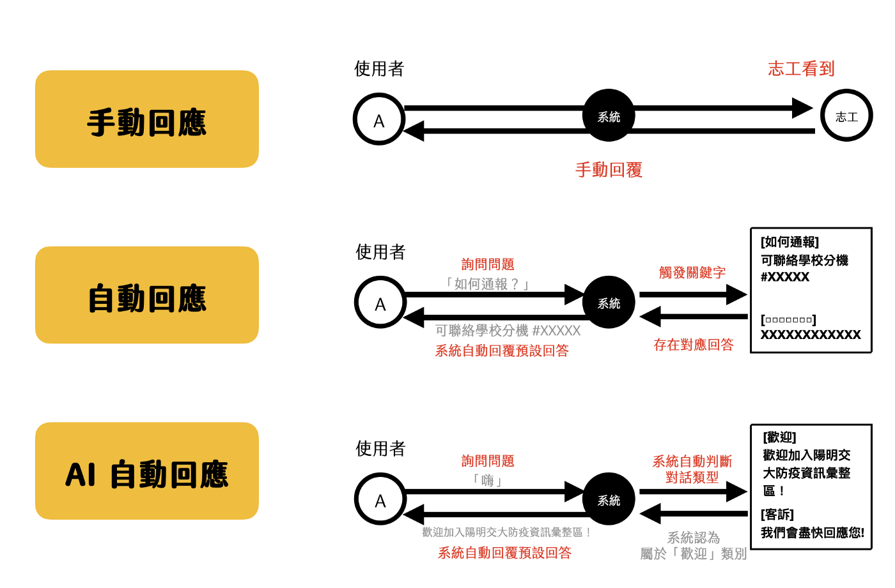
而這三者回應模式，僅只能選擇「智慧聊天」與「手動聊天」，此外「智慧聊天」可手動切換為「手動聊天」。在量少的店家可以充分利用，但當防疫資訊量大，且諮詢量龐大時，管理者端（防疫志工）很可能無法明確分辨哪些問題是需要「自動回覆」，哪些訊息需要「手動回覆」，很可能因此漏掉訊息，且整個工作流程會變得相當混亂。
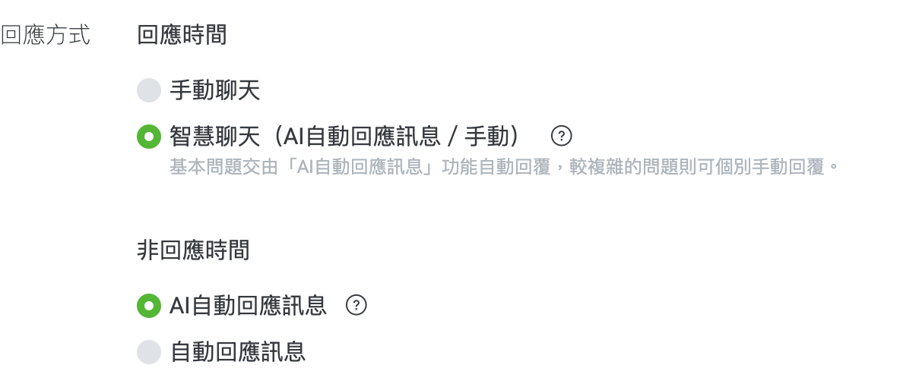
因此，我們在系統架構上，需因此做些調整。
系統架構：「符合人性」的系統規劃
最終，我們將所有功能分為「兩個官方帳號」，一個為「陽明交大防疫資訊彙整區」，為自動化聊天機器人；一個為「NYCU 疫情關懷志工」，全部由志工手動回覆疑問。
而透過學校的協助，將「陽明交大防疫資訊彙整區」的連結海報廣泛發送、張貼在各個陽明校區、交大校區的所有館舍、宿舍，希望大家可以加入這個 LINE 官方帳號。而在之中若有任何聊天機器人無法滿足使用者的，也可以依循指示點選「通報與關懷（後改名為「一對一志工問答服務」以臻明確）」可加入第二個 LINE 官方帳號，由專人服務。
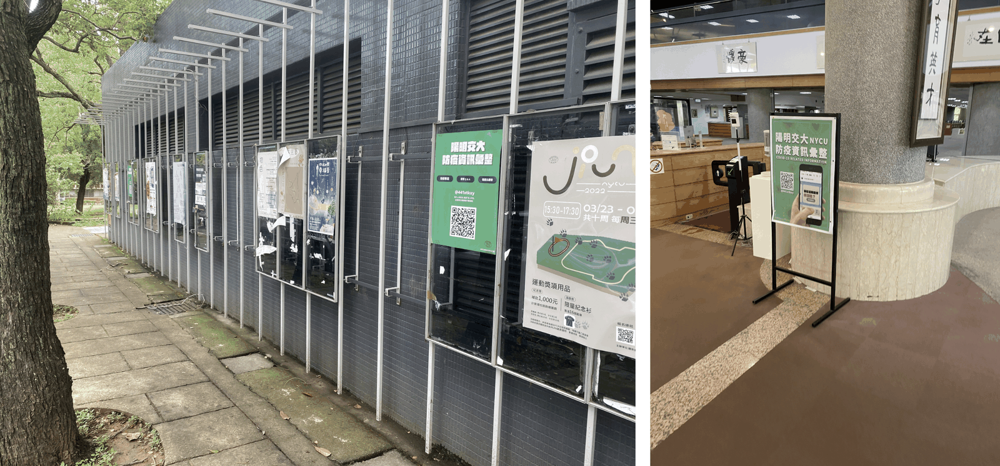
系統架構簡易圖
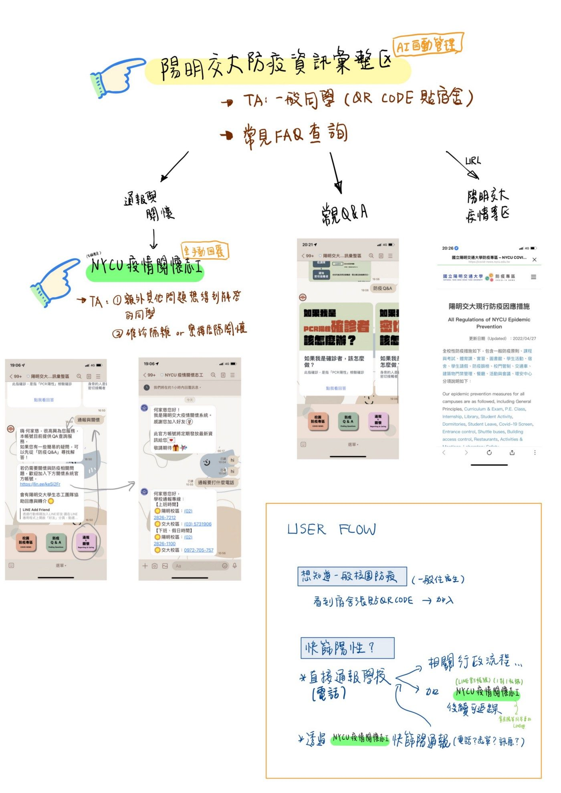
對於管理者端，除了我（系統設計者）以外，大家只需要加入「NYCU 疫情關懷志工」即可，排班協助處理所有手動詢問，事務與工作項目「非常單純」。
對於使用者端，所有同學也簡單明瞭地知悉「陽明交大防疫資訊彙整」LINE Chatbot ，從中獲取所有問題資訊。
各個官方帳號的功能
【陽明交大防疫資訊彙整】
三大功能
- 校園防疫專區：導向至「陽明交大防疫專區」網站。
- 防疫 Q&A：聊天機器人
- 一對一志工團問答服務(star)：引導連結到【NYCU 疫情關懷志工】專人服務
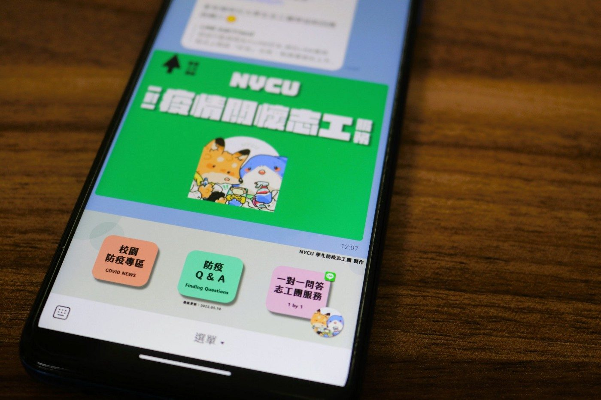
【NYCU 疫情關懷志工】
幾乎 24 小時手動專人回應與解答。
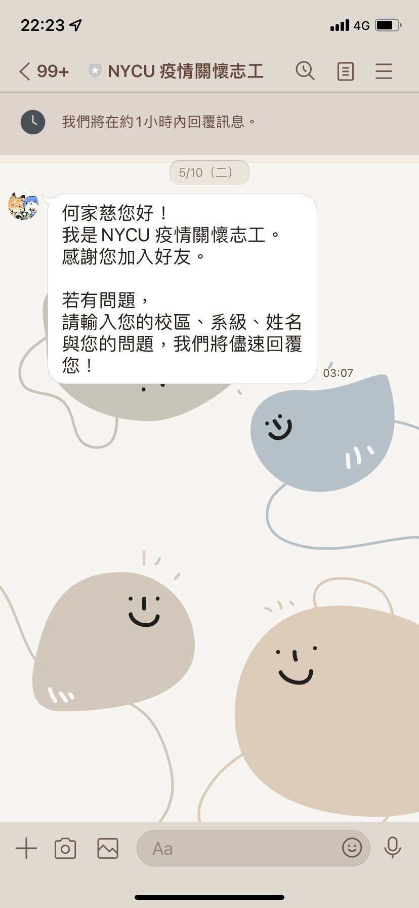
頁面下方圖文選單（Rich menu）設計演變
圖文選單（Rich menu）為 LINE 官方帳號下方的選單，供使用者點選其功能。
圖文選單位於 LINE 聊天室的下方，是相當值得利用的版位。當使用者甫加入官方帳號，第一眼很可能就會看到這個選單，並開始做點選與互動。因此這個版位的設計極為重要。
目前 LINE 預設的版位大小有兩種，一種較為寬大，一種較為扁小。
在設計上，兩種皆有嘗試，但在上線前幾週，最後仍選擇扁小的版位，主因是目前較無太多「特別」重要功能需要凸顯而佔用版位，且「資訊」的提供更顯重要，因此決定使用扁小的版位加以設計。
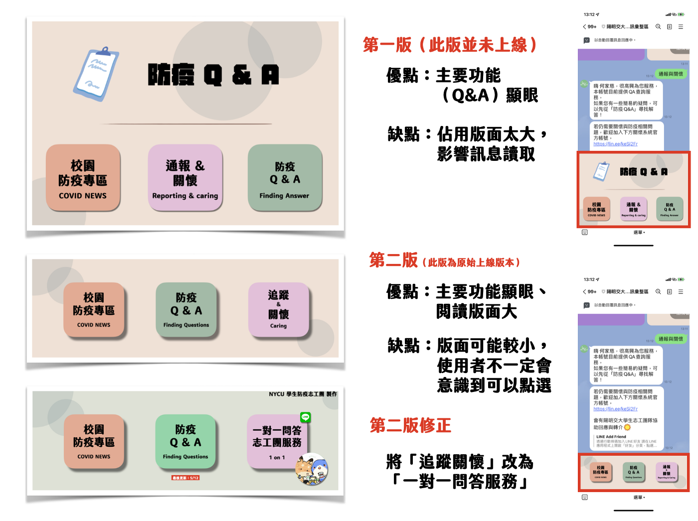
然而到了疫情中後期（約五月底），可發現部分問題持續被問，例如「視訊診療如何做」、「快篩陽性怎麼辦」，因此重新選擇了較寬大的版面，並提供「更直接」的連結「一步驟」點選到問題內容，而不用再像原先需要先點「防疫Q&A」、再點到這些重要問題的「兩步驟」處理。
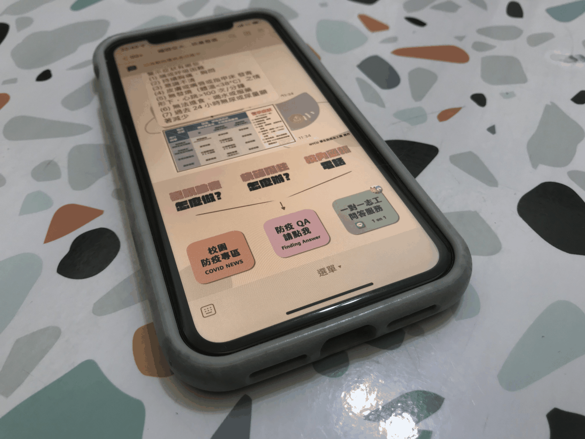
步驟越少、簡化使用者流程，更有效提供資訊。
Q&A 優化：想辦法讓使用者更容易理解與操作
Q&A 的使用，我們選擇「自動回應訊息」與「多頁訊息」的運用。
當點選「防疫 Q&A」，會先到「問題分類」，選擇分類後才會看到所有相關類似的問題供選擇。
然而，版面也歷經舊版與新版的過程，原先會將所有問題一次展開，後續仍分為兩步驟，先希望使用者可以點選問題的類型，再到確切的問題內容供點選。
然而沒有做太多的使用者諮詢，這樣的選擇也是最後自認為較親近使用者的操作，因此做了這樣的決定。
以下有影片示範，歡迎點選：
此外，每個問題的懶人包設計也耗費了不少學問，更改多次版面，希望能變得更加清楚明瞭：
範例：確診應變
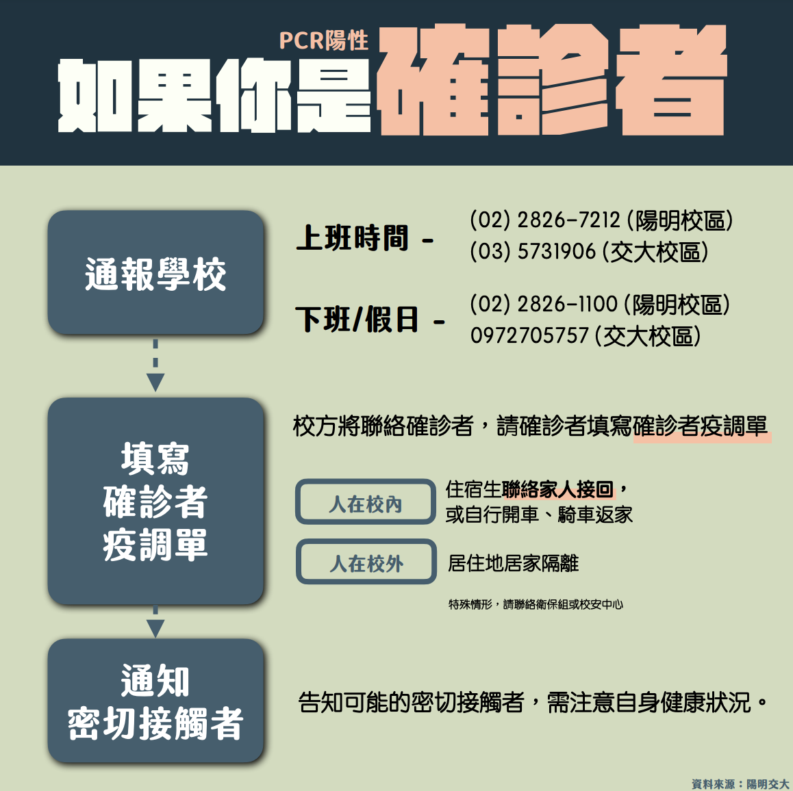
後因應政策轉變，及希望能更細分護理師權責，做流程圖的調整，並將資訊單純化：
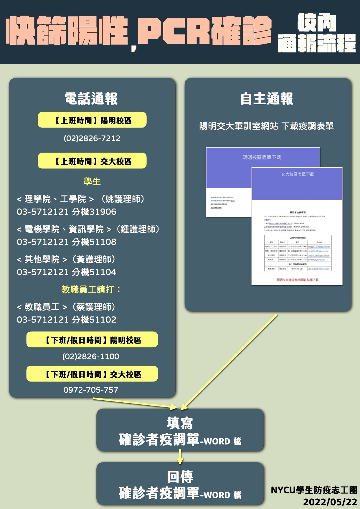
範例：7+7 / 3+4 / 0+7 統整圖
原先介面較為混亂，後續做版面位移與調整。
舊版：
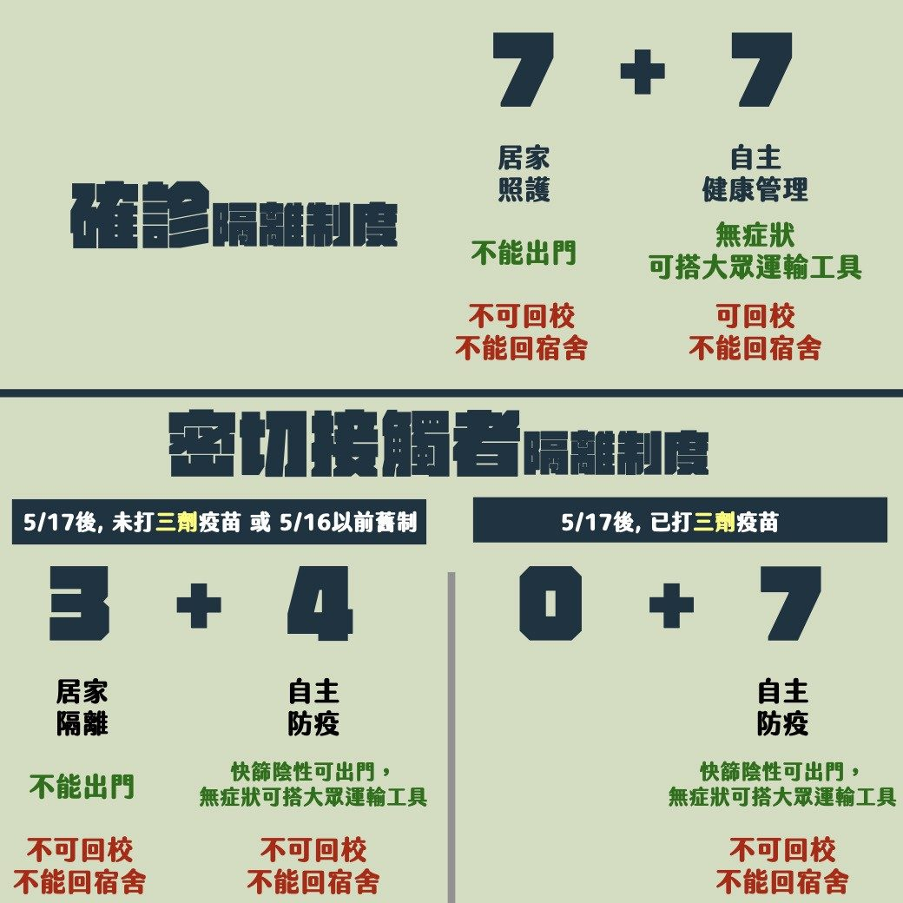
新版：
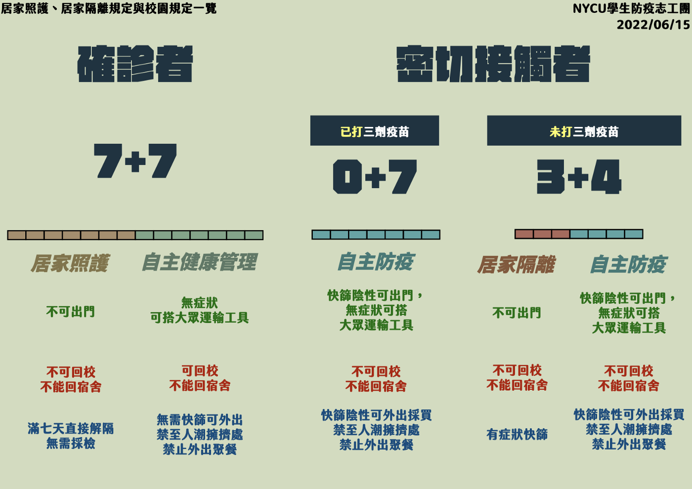
持續更新非常重要
政策更迭頻繁，所有資訊都需因此快速、同步更新
作為防疫資訊提供者，最重要的是要快速更新相關資訊，且當時疫情快速升溫，許多政策每週一變、隔離政策每週一變，皆需更上進度，否則這個 LINE 機器人會變得毫無用處。
因此，時常在每天 14:00，我們皆需要守著指揮中心直播，共同更新我們的回應內容，給予同學最即時、最正確的回覆。
範例：視訊診療
開放視訊診療時，大部分宣導健康益友 APP，因此原先最初我們積極宣導此 APP 供同學使用。
然而到後期，各縣市開始整理自己的醫療院所 list，我們也需因此更新，並也同步提醒健康益友 APP 出現塞車狀況的其他看診管道。
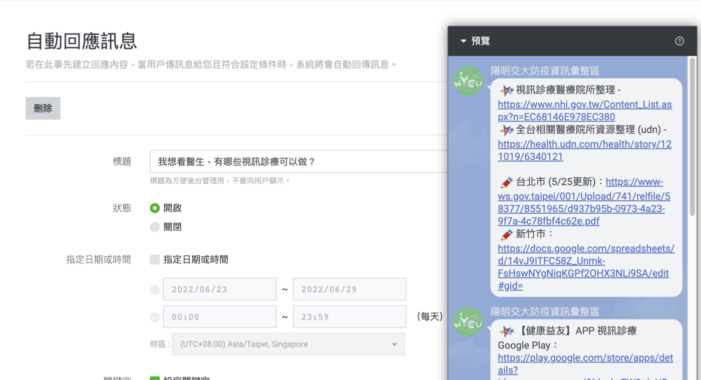
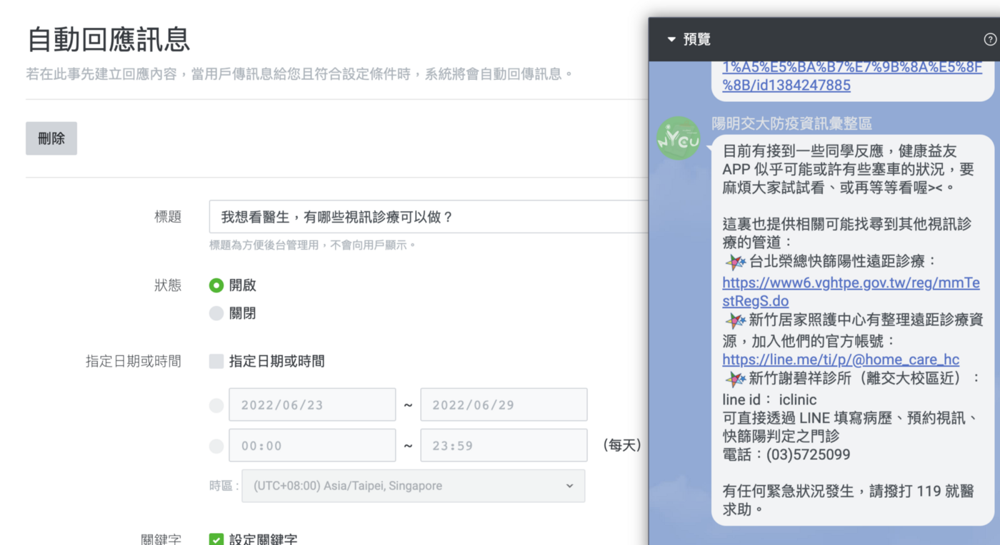
成果數據成效
隨著疫情趨緩，兩個官方帳號的使用量也漸少。
然而在這最艱難的一個月內，聊天機器人已超過 1000 人使用，一對一接近 24 小時服務超過 150 位同學們即時的需求。
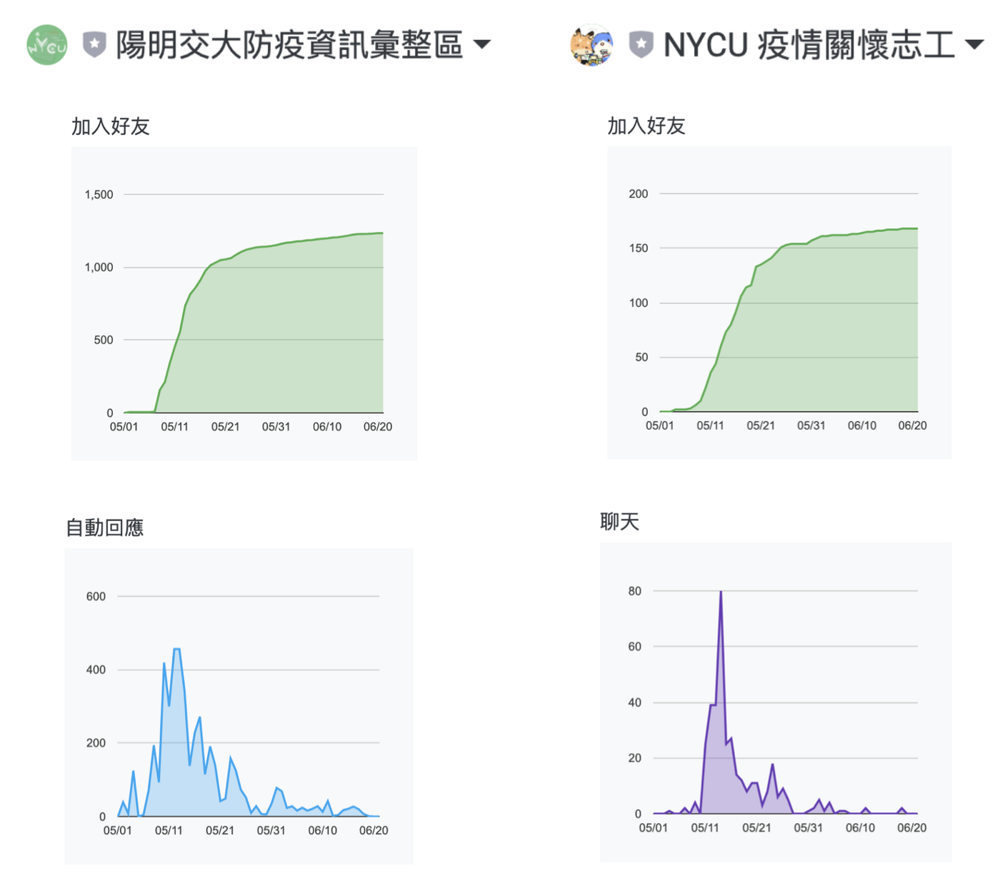
最後再次感謝學務處張玉佩老師、衛保組組長陳俞琪老師、公衛所雷文玫老師的指導、提供意見與資訊，及學生會長家語提供遠在南韓的確診之首爾大學聊天機器人的經驗分享。
最終更該感謝（感動流淚）所有志工團的幹部：子豪學長、辰昊、德範、軒立、芷嫺、直呂、承寬，沒有他們就沒辦法運作與建立這麼棒的關懷系統。